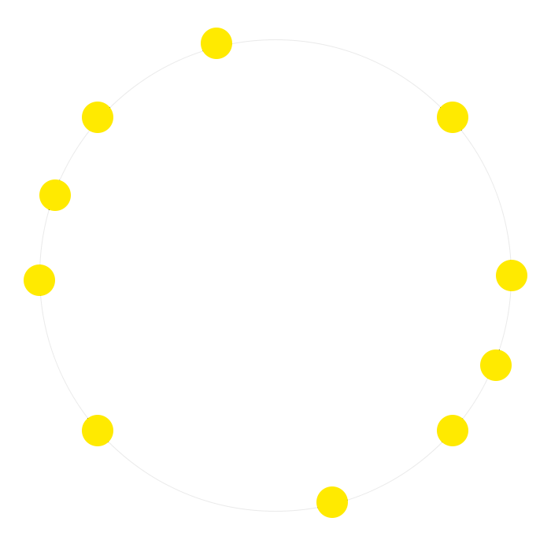
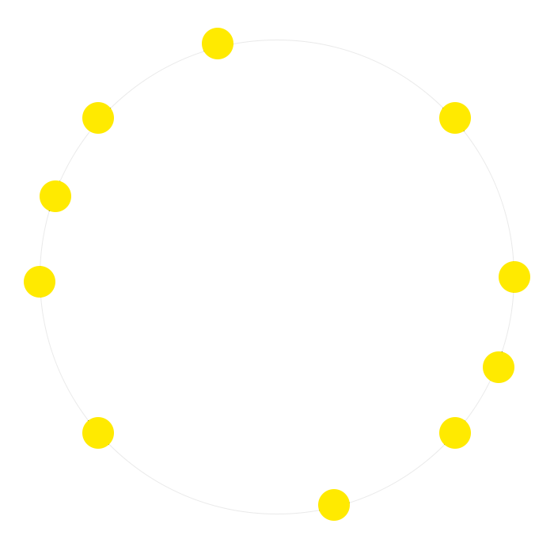

- Atomnummer: 40
- Atommassa: 91,224
- Ämnesklass: Övergångsmetall
- Grupp: 4
- Period: O(5:e Perioden)
- Block: D-blocket
- Aggregationstillstånd: Fast
- Elektronkonfiguration: 2 8 18 10 2
- Smältpunkt: 1855°C (2128 K)
- Kokpunkt: 4377°C (4650 K)
- Trippelpunkt: N/A
- Kritisk punkt: 2093 K
- Densitet: 6,52 g/cm3
- Oxidationstillstånd: +IV +III +II +I -I
- Elektronnegativitet: 1,33
- Jonisationspotential: 640 KJ/mol(1:a)
- Kovalent radie: 175+-7 pm
- Van der Waal radie: N/A
ZIRKONIUM


 
